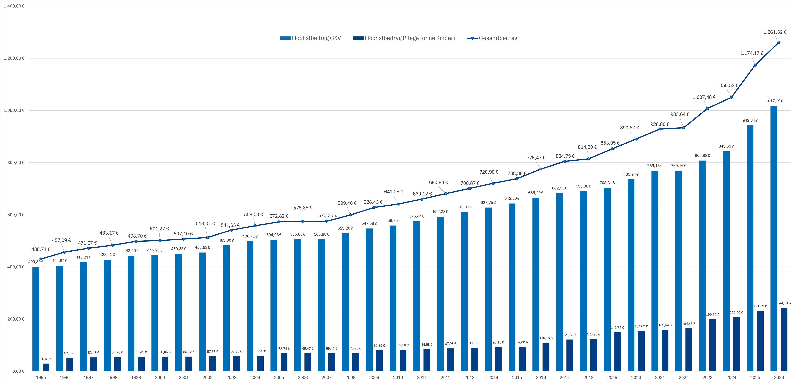

Private Krankenversicherung (PKV)
Profitieren Sie von erstklassiger medizinischer Versorgung und individuellen Leistungen. Die PKV bietet Ihnen als Angestellter mit höherem Einkommen exzellente Behandlungsmöglichkeiten und flexible Tarifgestaltung.
Was ist die private Krankenversicherung?
Erstklassige medizinische Versorgung und individuelle Absicherung
Die private Krankenversicherung (PKV) ist eine Alternative zur gesetzlichen Krankenversicherung (GKV). Sie bietet in der Regel umfangreichere Leistungen, kürzere Wartezeiten und eine individuellere Betreuung.
Anders als in der GKV zahlen Sie in der PKV einen risikobasierten Beitrag, der sich nach Ihrem Alter, Gesundheitszustand und gewünschten Leistungen richtet – nicht nach Ihrem Einkommen.
💡 Der Unterschied zur gesetzlichen Krankenversicherung
Während die GKV nach dem Solidaritätsprinzip funktioniert (Beiträge richten sich nach dem Einkommen), basiert die PKV auf dem Äquivalenzprinzip (Beiträge richten sich nach dem individuellen Risiko und den gewählten Leistungen).
PKV vs. GKV: Attraktivität im Vergleich
Bessere medizinische Versorgung
Als Privatpatient erhalten Sie oft bevorzugte Termine, Chefarztbehandlung im Krankenhaus und Zugang zu modernsten Behandlungsmethoden. Die Wartezeiten sind deutlich kürzer.
Freie Arztwahl
Sie können jeden Arzt und jede Klinik frei wählen, unabhängig davon, ob dieser Kassenarzt ist oder nicht. Auch Spezialisten und Universitätskliniken stehen Ihnen offen.
Individueller Versicherungsschutz
Sie stellen sich Ihren Tarif individuell zusammen und wählen genau die Leistungen, die Sie benötigen – von Zahnersatz über Sehhilfen bis zu Einzelzimmer im Krankenhaus.
Beitragsrückerstattung
Wenn Sie keine Leistungen in Anspruch nehmen, erhalten Sie in vielen Tarifen Beitragsrückerstattungen von bis zu mehreren Monatsbeiträgen pro Jahr.
Garantierte Leistungen
Ihre vertraglich vereinbarten Leistungen sind garantiert und können nicht einseitig gekürzt werden – im Gegensatz zur GKV, wo Leistungen politisch angepasst werden können.
Altersrückstellungen
Ein Teil Ihrer Beiträge fließt in Altersrückstellungen, die Beitragssteigerungen im Alter dämpfen. Diese gehören Ihnen und sind geschützt.
Voraussetzungen für den Wechsel als Angestellter
Als Angestellter können Sie nicht einfach so in die PKV wechseln. Sie müssen bestimmte Voraussetzungen erfüllen.
📊 Die Jahresarbeitsentgeltgrenze (JAEG)
Die wichtigste Voraussetzung ist das Überschreiten der Jahresarbeitsentgeltgrenze (auch Versicherungspflichtgrenze genannt).
- 2025: Die JAEG liegt bei 73.800 € brutto pro Jahr (6.150 € pro Monat)
- 2026: Die JAEG liegt bei 77.400 € brutto pro Jahr (6.450 € pro Monat)
- Diese Grenze wird jährlich angepasst
-
Einkommen über der JAEG
Ihr regelmäßiges Jahreseinkommen (Bruttolohn inkl. regelmäßiger Zulagen, aber ohne Sonderzahlungen wie Weihnachtsgeld) muss die JAEG überschreiten. Einmalzahlungen zählen nicht zur Berechnung.
-
Mindestdauer über der Grenze
Sie müssen ein komplettes Kalenderjahr (12 aufeinanderfolgende Monate) über der JAEG verdienen. Erst dann endet Ihre Versicherungspflicht in der GKV und Sie können zur PKV wechseln.
-
Gesundheitsprüfung bestehen
Die PKV führt vor Vertragsabschluss eine Gesundheitsprüfung durch. Je nach Vorerkrankungen können Zuschläge erhoben, Leistungen ausgeschlossen oder der Antrag sogar abgelehnt werden.
-
Weitere Berechtigungsgruppen
Beamte, Selbstständige und Freiberufler können unabhängig vom Einkommen in die PKV wechseln. Für sie gelten keine Einkommensgrenzen.
⚠️ Wichtig zu beachten
Der Wechsel in die PKV sollte gut überlegt sein. Eine Rückkehr in die GKV ist als Angestellter ab 55 Jahren praktisch nicht mehr möglich. Auch bei sinkendem Einkommen unter die JAEG bleibt man in der PKV.
Entwicklung des Höchstbeitrags in der GKV

📈 Kontinuierlicher Beitragsanstieg seit 1995
Die Grafik zeigt deutlich: Die Höchstbeiträge zur gesetzlichen Kranken- und Pflegeversicherung sind in den letzten drei Jahrzehnten kontinuierlich gestiegen. Während der Gesamtbeitrag 1995 noch bei 420,71 € lag, erreicht er 2026 bereits 1.261,31 € – eine Steigerung um über 200%.
Die PKV bietet Ihnen stabile, individuell kalkulierte Beiträge, die nicht von der Beitragsbemessungsgrenze abhängen.
So sparen Sie mit der PKV
Sehen Sie selbst, wie attraktiv ein Wechsel zur privaten Krankenversicherung für Sie sein kann:
AOK Niedersachsen
Ihre derzeitige GKV
Jahresbeitrag (Arbeitnehmeranteil*)
6.131 €
17,58 % Beitragssatz
Mögliche Alternative
Durchschnittlicher PKV-Tarif
Jahresbeitrag (Arbeitnehmeranteil*)
2.929 €
Mögliche Ersparnis
Bei Wechsel in die PKV
Jahresersparnis
3.202 €
*Der Arbeitgeber beteiligt sich sowohl bei der gesetzlichen als auch bei der privaten Krankenversicherung zu 50 % an den Kosten seiner Angestellten. Der steuerfreie Zuschuss für die private Krankenversicherung ist allerdings begrenzt auf den Höchstbeitrag, den der Arbeitgeber auch zur gesetzlichen Krankenversicherung seiner Mitarbeiter beisteuern würde.
Häufige Fragen zur privaten Krankenversicherung
Als Angestellter können Sie in die PKV wechseln, wenn Ihr regelmäßiges Jahreseinkommen die Jahresarbeitsentgeltgrenze (JAEG) überschreitet. Für 2026 liegt diese bei 77.400 € brutto jährlich (6.450 € monatlich).
Sie müssen mindestens ein komplettes Kalenderjahr über dieser Grenze verdienen, bevor Sie wechseln können. Der Wechsel ist dann zum Jahresende mit einer Kündigungsfrist von 2 Monaten zur GKV möglich.
Wenn Ihr Einkommen als Angestellter wieder unter die JAEG sinkt, bleiben Sie in der PKV. Eine automatische Rückkehr in die GKV gibt es nicht.
Sie können nur unter bestimmten Voraussetzungen zurück:
- Wenn Sie unter 55 Jahre alt sind und wieder versicherungspflichtig werden (z.B. durch ein Einkommen unter der JAEG)
- Wenn Sie arbeitslos werden und Arbeitslosengeld I beziehen
- Wenn Sie eine geringfügige Beschäftigung (Minijob) aufnehmen
Ab 55 Jahren ist die Rückkehr in die GKV praktisch nicht mehr möglich.
Eine Rückkehr ist grundsätzlich schwierig und an strenge Bedingungen geknüpft:
- Als Angestellter unter 55 Jahren: Möglich, wenn Sie wieder versicherungspflichtig werden (Einkommen unter JAEG, Arbeitslosigkeit)
- Ab 55 Jahren: Praktisch unmöglich, außer Sie werden familienversichert (sehr selten)
- Als Selbstständiger: Nur durch Aufnahme einer versicherungspflichtigen Angestelltentätigkeit unter der JAEG
Wichtig: Die Entscheidung für die PKV sollte daher wohlüberlegt und langfristig geplant sein!
Die Beiträge in der PKV sind individuell und hängen ab von:
- Eintrittsalter: Je jünger Sie eintreten, desto günstiger
- Gesundheitszustand: Vorerkrankungen können zu Zuschlägen führen
- Gewählte Leistungen: Umfangreichere Tarife kosten mehr
- Selbstbeteiligung: Höhere Selbstbeteiligung senkt den Beitrag
Als junger, gesunder Angestellter zahlen Sie oft weniger als in der GKV. Mit zunehmendem Alter steigen die Beiträge jedoch stärker als in der GKV. Ein Vergleich lohnt sich!
Beispiel: Ein 30-jähriger Angestellter zahlt ca. 400-600 € monatlich für einen umfassenden Tarif. In der GKV würde er bei 73.800 € Einkommen ca. 700-800 € zahlen.
Anders als in der GKV gibt es in der PKV keine kostenlose Familienversicherung. Jedes Familienmitglied benötigt einen eigenen Versicherungsvertrag.
Ehepartner: Muss sich selbst versichern (PKV oder GKV, falls Anspruch besteht)
Kinder: Müssen ebenfalls einzeln versichert werden. Die Beiträge für Kinder sind jedoch meist deutlich günstiger (ca. 100-200 € pro Kind). Kinder können in der GKV familienversichert werden, wenn der andere Elternteil gesetzlich versichert ist und mehr verdient.
Wichtig: Planen Sie die Familienkosten ein! Bei mehreren Kindern kann die PKV teurer werden als die GKV.
Altersrückstellungen sind ein wichtiger Bestandteil der PKV-Beiträge. Ein Teil Ihres monatlichen Beitrags wird zurückgelegt, um steigende Gesundheitskosten im Alter zu dämpfen.
So funktioniert es:
- In jungen Jahren zahlen Sie mehr, als Sie statistisch an Leistungen in Anspruch nehmen
- Diese "Überzahlung" wird verzinslich angelegt
- Im Alter werden diese Rückstellungen genutzt, um Beitragssteigerungen abzufedern
- Die Rückstellungen gehören Ihnen und sind gesetzlich geschützt
Wichtig bei Tarifwechsel: Innerhalb der gleichen Versicherung bleiben Altersrückstellungen vollständig erhalten. Beim Wechsel zu einer anderen PKV gehen sie teilweise verloren (seit 2009 wird ein Sockelbetrag übertragen).